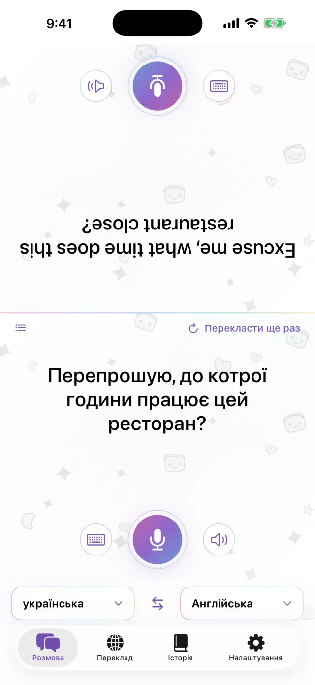
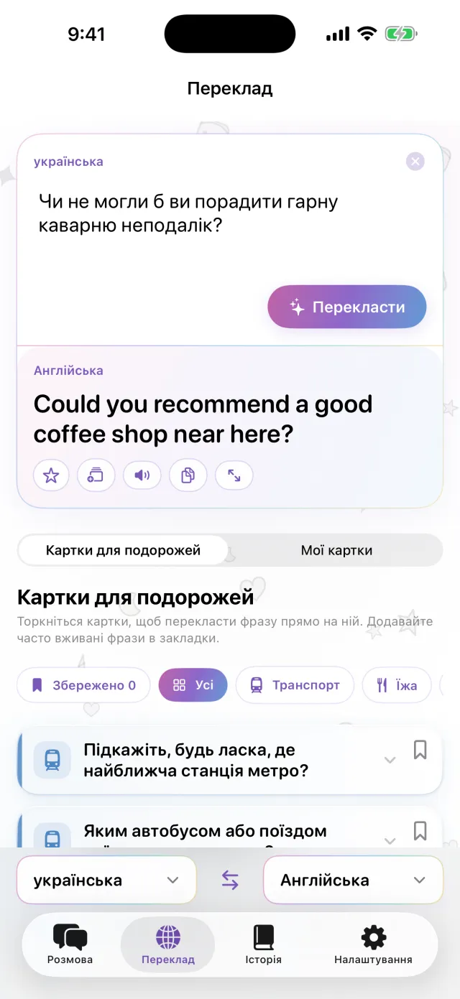
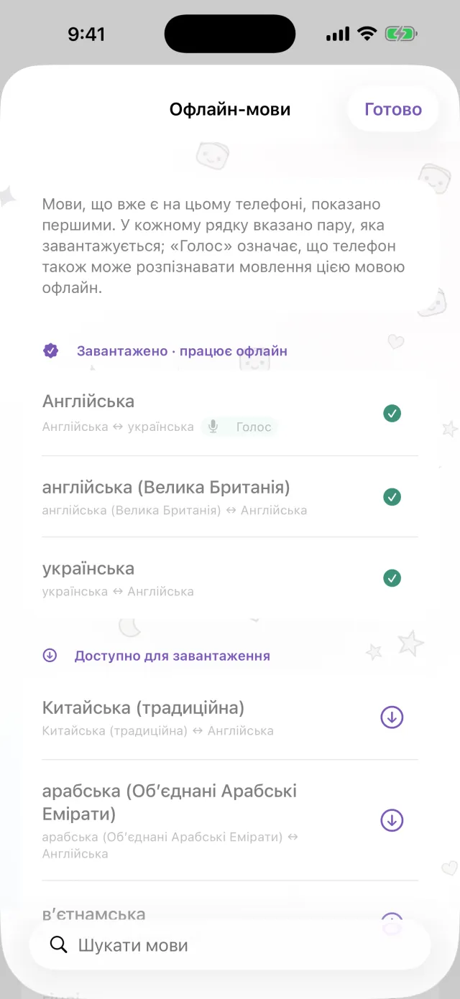
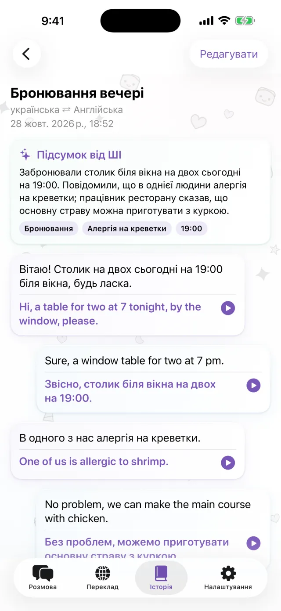
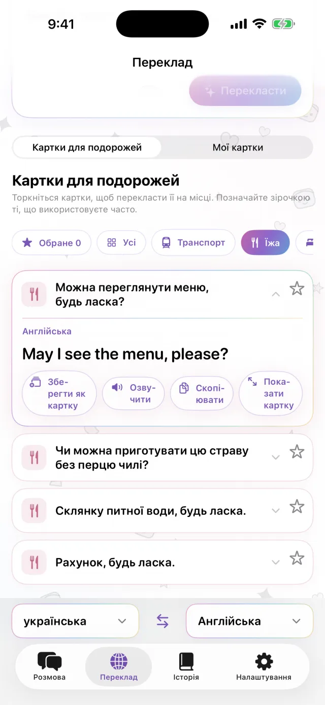
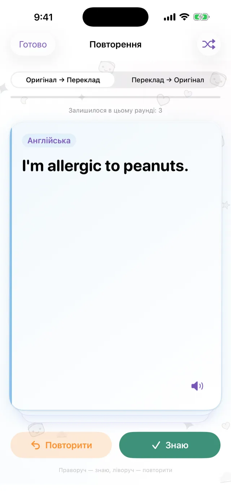

Перекладач для iPhone
Перекладач для iPhone
Покладіть iPhone між вами.
Це все.
Натисніть мікрофон і говоріть. Переклад з’явиться на другій половині екрана, обернений до співрозмовника. Коли співрозмовник відповідає, усе працює так само. Завантажте мови заздалегідь, і застосунок працюватиме без з’єднання.
Завантажити з App Store- Близько 20 мов
- Офлайн після завантаження
- Без реєстрації

Клавіатура перекладу
Пишіть своєю мовою, відповідайте їхньою
Додайте клавіатуру Желе-перекладач. У будь-якому чаті чи листі наберіть своєю мовою те, що хочете сказати, і перемкніться на цю клавіатуру: переклад уже готовий. Натисніть «Замінити», і ваше повідомлення буде мовою співрозмовника, його лишається тільки надіслати. Потрібен інший тон? ШІ також пропонує розмовний, ввічливий і короткий варіанти. Не розумієте повідомлення? Скопіюйте його й перемкніться на клавіатуру: побачите значення та кілька відповідей їхньою мовою.
- Працює в текстових полях більшості застосунків (крім полів для пароля)
- Переклад виконується на вашому iPhone, а клавіатура не зберігає те, що ви друкуєте
- «Скасувати» повертає ваші слова
Введення тексту
Не можете говорити вголос? Наберіть текст.
У тихому місці або коли співрозмовник говорить надто швидко, просто наберіть текст. Переклад можна розгорнути на весь екран і показати співрозмовнику.
- Скопіюйте переклад або озвучте його
- Міняйте мови місцями одним дотиком

Офлайн
Без з’єднання переклад працює
Переклад, розпізнавання мовлення й озвучення працюють на вашому iPhone. Завантажте потрібні мови перед поїздкою, і застосунок працюватиме в літаку або до купівлі SIM-картки. За замовчуванням те, що ви говорите, нікуди не надсилається, а записи не зберігаються.

Pro
Підсумок кожної розмови
Після розмови в історії з’являються коротка назва, підсумок і ключові слова. Пізніше можна знайти «бронювання вечері в Осаці», не гортаючи кожен рядок. Підсумок пише Apple Intelligence на вашому iPhone, він нікуди не завантажується. Якщо розмова надто коротка, підсумок не створюється, щоб у ньому не було того, чого ніхто не казав.
- Видаляйте всю розмову або окреме речення

Картки з фразами
Збережіть те, що кажете щоразу
Адреса готелю, харчова алергія, станція, яку ви шукаєте. Збережіть їх як картки, і набирати знову не доведеться. Торкніться картки, і вона перекладеться мовою співрозмовника. Готові «Картки для подорожей» про транспорт, їжу, проживання й покупки вже є в застосунку.

Pro
Повторюйте збережені речення вчасно
Торкніться зірочки біля речення, щоб зберегти його для повторення. Якщо ви його пам’ятаєте, воно повернеться через 1, 3, 7, 14, а потім 30 днів. Якщо ні, ви побачите його знову того ж дня. Можна йти від оригіналу до перекладу або навпаки. Ця функція входить у Pro.

Стане в пригоді, коли треба
- Замовити їжу в невеликому ресторані
- Назвати таксисту адресу
- Пояснити в аптеці, на що в вас алергія
- Залишити валізи на рецепції готелю
- Спитати дорогу
Подивіться за 30 секунд
У цьому відео ввімкнено авіарежим.
Коротко
| Мови | Близько 20 (мови, які Apple перекладає на пристрої) |
|---|---|
| Офлайн | Так, після завантаження мов |
| Голосове введення | Так. Під час першого використання через Wi‑Fi завантажується модель мовлення (150–400 МБ) |
| Підсумок ШІ | iPhone, що підтримує Apple Intelligence |
| Клавіатура перекладу | Працює в будь-якому застосунку. Варіанти від ШІ потребують Apple Intelligence або вашого власного ключа ШІ |
| Обліковий запис | Не потрібен |
| Ціна | Безкоштовно. Pro — додатково (див. нижче) |
| Вимоги | iPhone з iOS 18 або новішою |
- Уперше потрібне з’єднання, щоб завантажити мови.
- Ціни в App Store показано у вашій місцевій валюті.
Безкоштовна версія і Pro
Безкоштовно
- Розмова віч-на-віч
- Введення тексту й показ на весь екран
- Клавіатура перекладу з варіантами від ШІ
- Офлайн-переклад
- «Картки для подорожей» і 3 власні картки
- Невеликий банер реклами (за короткий відеоролик — 15 хвилин без реклами)
Pro
- Підсумок ШІ для кожної розмови
- Повна історія перекладів
- Необмежена кількість карток і повторення за інтервалами
- Без реклами
Тиждень, місяць або одноразова покупка.
Перед поїздкою завантажте мови.
Завантажити з App StoreiPhone · iOS 18 або новіша · Безкоштовне завантаження · Як працює кожен екран